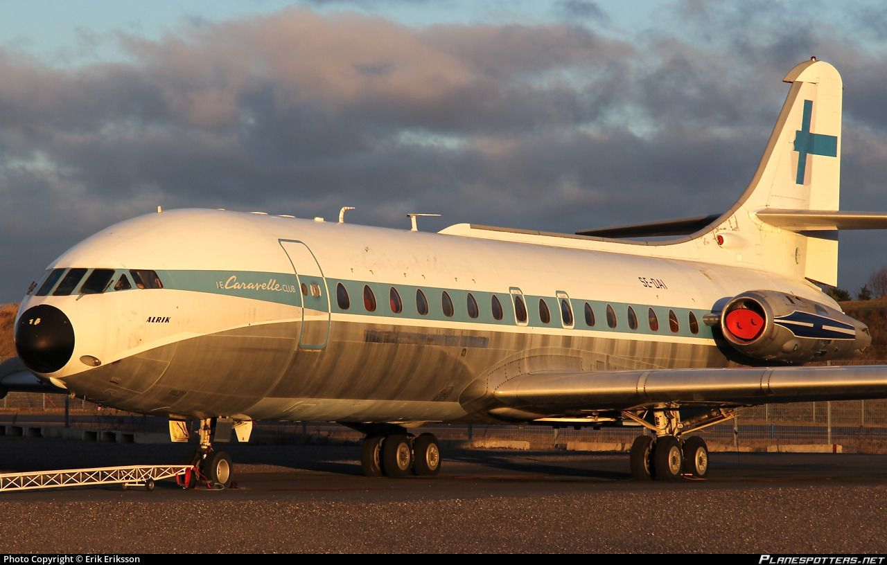

Sélectionnez un aéronef pour explorer son jumeau numérique

La Caravelle
À venir
Jumeau numérique de la Caravelle — en cours de développement.
Découvrir
Boeing 707 « Château de Maintenon » — Musée de l'Air et de l'Espace, Dugny, Photo : Tania Rieu, 2022 — Réf. 2022MAEB053_002_001
Boeing 707-328
Château de Maintenon
Avion long-courrier emblématique de l'aviation commerciale, conservé aux ateliers de restauration du Musée de l'Air et de l'Espace à Dugny.
Découvrir